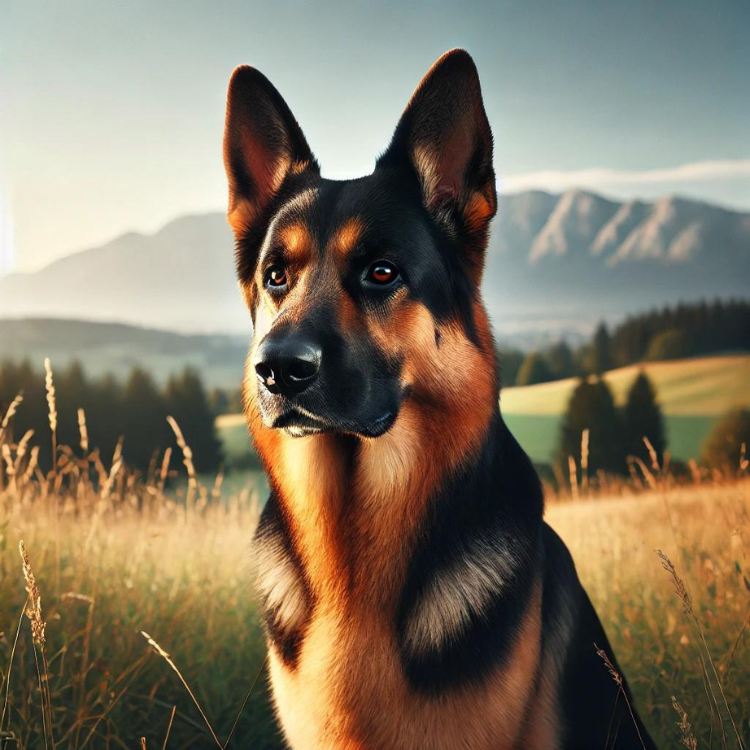

Discovering the German Shepherd: The Ultimate Working Dog

Introduction
The German Shepherd is a breed renowned for its intelligence, strength, and loyalty. Originally from Germany, German Shepherds have become one of the most popular and versatile dogs worldwide. Known for their roles in police and military work, these dogs also excel as family pets and companions. This article explores the unique characteristics and history of the German Shepherd dog, shedding light on why they are considered the ultimate working dog.
Breed History
The German Shepherd was developed in the late 19th century by Captain Max von Stephanitz, who aimed to create the ideal working dog. By selectively breeding herding dogs, he produced a breed that excelled in intelligence, trainability, and work ethic. The German Shepherd gained recognition quickly and was extensively used in both World Wars for tasks like messenger duties, rescue operations, and guarding.
Physical Characteristics
German Shepherds are large, strong dogs with an athletic build:
- Size: They stand between 22-26 inches at the shoulder and weigh 50-90 pounds.
- Coat: German Shepherds have a dense, water-resistant double coat that comes in various colors, including black and tan, black and red, sable, and even all black or all white.
Temperament
German Shepherds are known for their loyalty, courage, and confidence:
- Family Pets: Their intelligence and trainability make them suitable for roles ranging from family pets to police, military, and search and rescue dogs.
- Protective Nature: They are protective of their families and can be reserved with strangers, making them excellent guard dogs.
- Training: Early socialization and training are essential to help them develop into well-rounded companions.
Exercise Needs
German Shepherds are active and energetic dogs that require regular exercise:
- Physical Activity: They enjoy activities like running, hiking, and fetch.
- Mental Stimulation: They thrive with obedience training, agility courses, and puzzle toys, which keep their minds sharp and prevent behavioral issues.
Health and Lifespan
German Shepherds typically live 9-13 years:
- Health Issues: Common conditions include hip and elbow dysplasia, degenerative myelopathy, and heart diseases. Regular veterinary check-ups and a healthy lifestyle are crucial.
- Responsible Breeding: Ensures the reduction of genetic disorders, improving overall breed health.
Training and Socialization
Training and socialization are critical for German Shepherd puppies:
- Early Exposure: Helps them grow into confident adults.
- Positive Reinforcement: They respond well to positive reinforcement, where good behavior is rewarded with treats and praise. Consistent training is key to managing their energy and intelligence.
Fun Facts
- Versatile Working Dog: German Shepherds are used in police work, search and rescue, and as service dogs. Their versatility is unmatched among working dog breeds.
- Intelligence: Ranked just behind Border Collies in intelligence, German Shepherds are known for their ability to perform complex tasks.
- Protective: Their natural protective instincts make them excellent watchdogs, ensuring their families and homes are safe.
- Distinct Colors: Their coat comes in diverse colors, such as black and tan, sable, and all-black.
- Physical Strength: They are built strong, which helps them handle physical demands better than many other breeds.
Conclusion
German Shepherds are exceptional dogs that combine intelligence, loyalty, and versatility. Whether as working dogs or beloved family pets, their unique qualities make them stand out. With proper training, socialization, and care, a German Shepherd can be a loyal and devoted companion for years to come. If you’re looking for a dog that embodies strength, courage, and companionship, the German Shepherd is an ideal choice.
Want to gain a deeper understanding of dog behavior and how to care for them? Click the link below to read more related articles. read more related articles
Looking for products for your cat or dog? Check out the articles linked below for more information and recommendations. Explore more articles